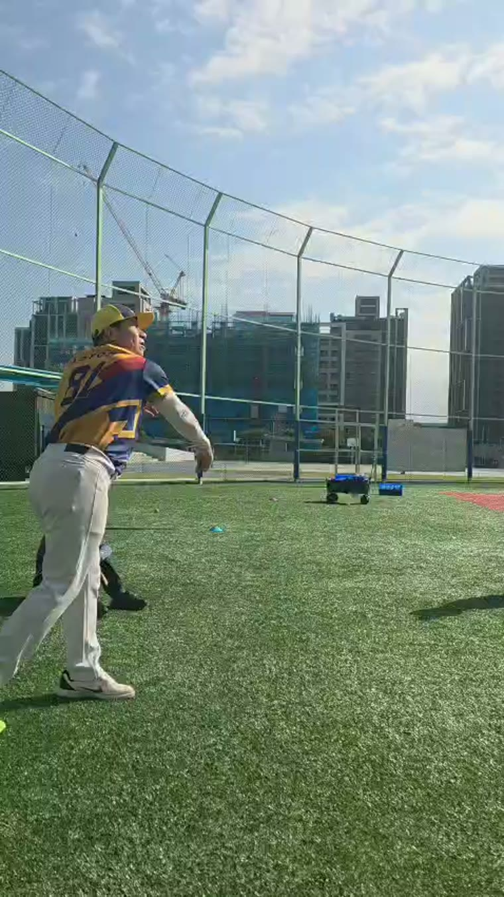
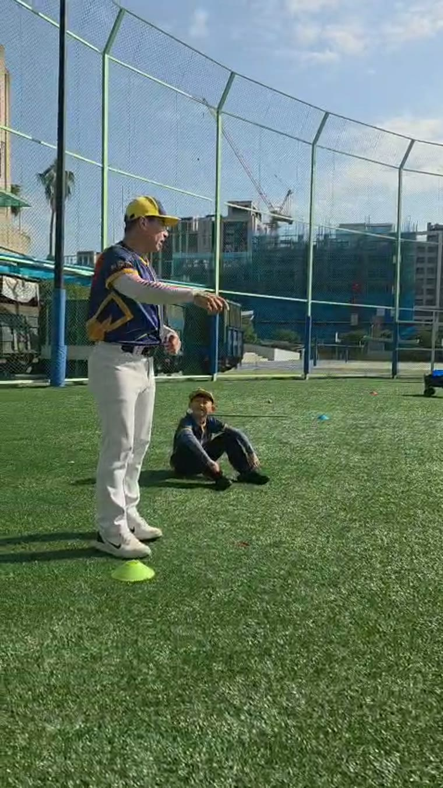
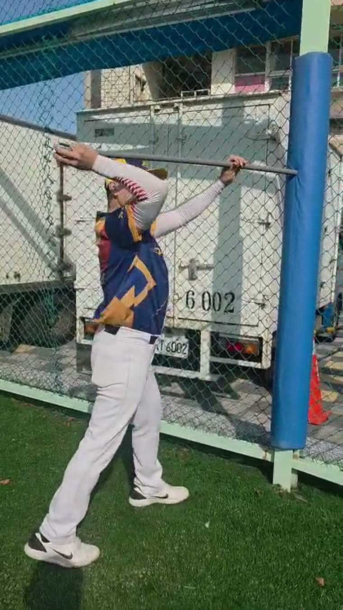
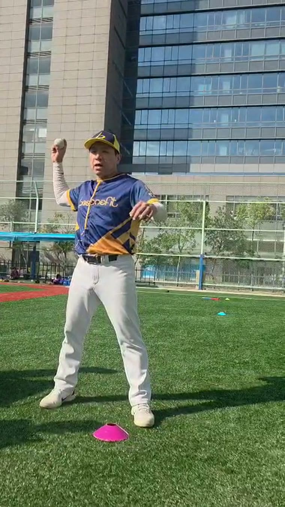
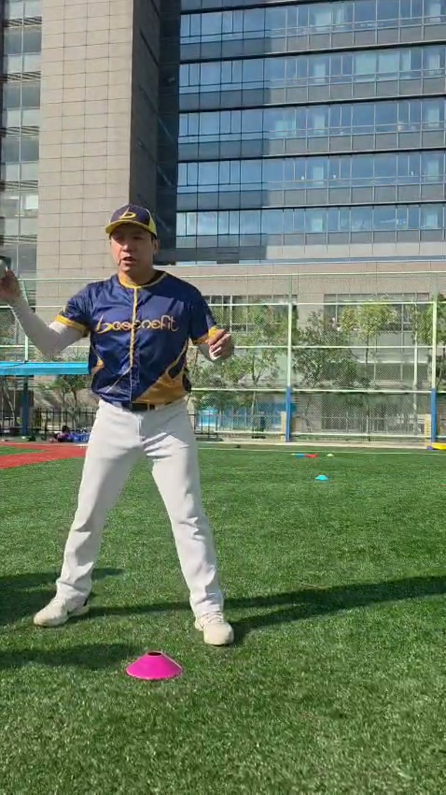
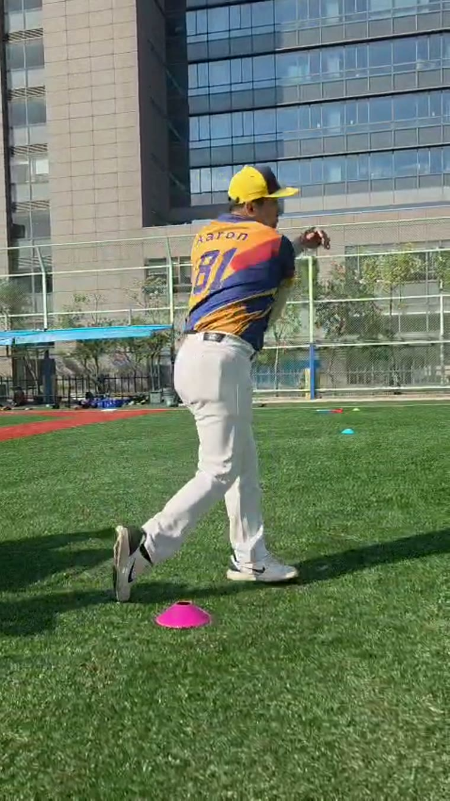
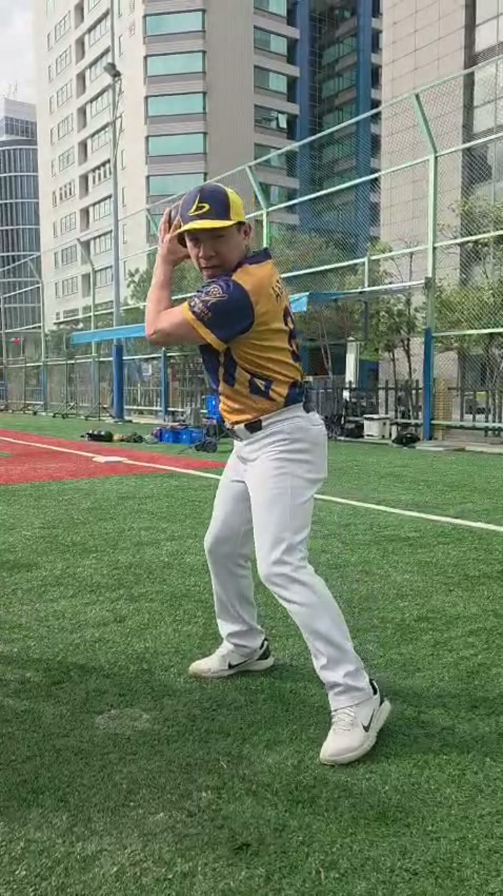
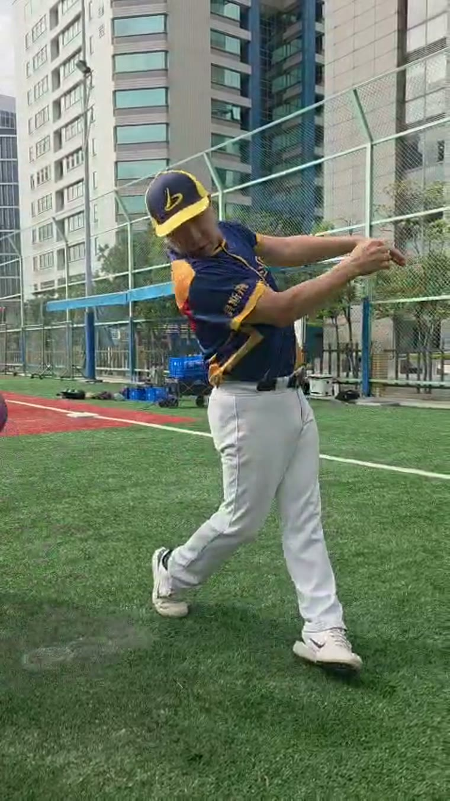
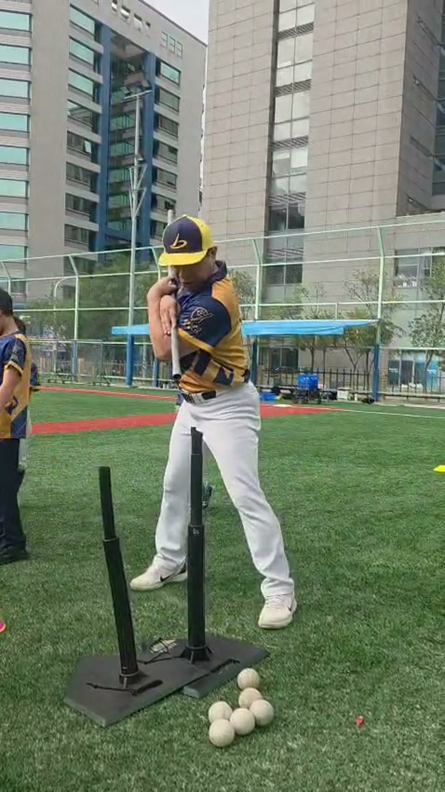
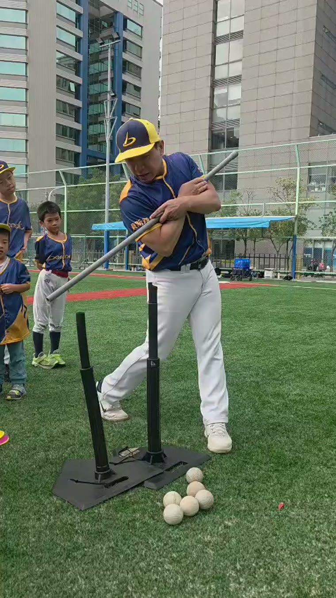

basenefit 動作圖庫
basenefit 棒球動作分解圖庫：打擊、投擲、短打與收打的關鍵格，每一張都有獨立頁面、中文說明與英文對照，可作為教學與簡報素材。
basenefit baseball motion reference gallery: key frames for hitting, throwing, bunting and check swings, each with its own page and a bilingual caption.
共 24 格 · 6 組動作 · 每一格都有獨立頁面、中文與英文說明。
標槍式伸展 Javelin arm extension
手臂像標槍一樣整支伸直，方向往前、不跑歪，末端朝前把球送出去。四格看得到從平舉到完全的伸展路徑。
The arm extends like a javelin: straight, on line, tip forward. Four frames show the path from level arms to full extension.
 雙臂平舉的預備位置Level arms in the start position
雙臂平舉的預備位置Level arms in the start position 手臂完全伸直、不彎折Arm fully extended, no bend
手臂完全伸直、不彎折Arm fully extended, no bend
方向往前，沒有往外跑On line forward, not drifting out
末端朝前，把球往前送Tip forward, driving the ball out front推打手肘角度 Push-swing elbow angle
推打時手肘要保持平行、抬高，靠身體伸展帶動，而不是把手肘壓低硬推。四格是教練兩輪示範的關鍵位置。
On a push swing the elbow stays level and high, driven by body extension — not dropped low and shoved. Four key positions from two demonstrations.
 立起前臂示範角度Forearm raised to show the angle
立起前臂示範角度Forearm raised to show the angle 手肘保持平行的高度Elbow kept level
手肘保持平行的高度Elbow kept level
用身體伸展帶動手肘Body extension drives the elbow 第二次示範的收尾位置Finish position of the second rep
第二次示範的收尾位置Finish position of the second rep順暢投擲 Smooth throwing path
起身的時候不能挺頓，要順著往前往後再往上的節奏走；中途停住就沒有順暢度。四格對應起、蓄、送、收。
The rise has to be continuous: forward, back, then up — stopping halfway kills the flow. Four frames for the load, the drive and the finish.

起身的起點Start of the rise
往後蓄力的位置Loaded back 往上順上去的瞬間Carrying the momentum up
往上順上去的瞬間Carrying the momentum up
出手後的收尾Finish after release藥球旋轉甩球 Med-ball rotational throw
藥球從高處往下甩、帶動身體旋轉出手，用來練體幹帶動手臂的順序。五秒短片，四格就是整個動作。
A medicine ball swung down and through with rotation, training the trunk to lead the arms. A five-second clip, four frames tell the whole story.

持球的預備姿勢Start with the ball
手臂與球往下Arm and ball go down 身體旋轉帶動Trunk rotation leads
身體旋轉帶動Trunk rotation leads 出手後的延續Follow-through after release
出手後的延續Follow-through after release肩膀與球棒軌跡 Shoulder and bat path
肩膀對到哪裡、球棒就要對到哪裡：右打者是左高右低的肩膀線，球棒走同一條平行軌跡，肩膀一掉球棒就跟著掉。
Where the shoulder lines up, the bat lines up: a right-handed hitter runs a left-high, right-low shoulder line, and the bat tracks the same parallel path. Drop the shoulder and the bat drops with it.

肩膀與球棒的對位Shoulder aligned with the bat
肩膀軌跡保持水平Shoulder path stays level 右打者的左高右低Left high, right low for a right-handed hitter
右打者的左高右低Left high, right low for a right-handed hitter 只轉腰、轉肩，軌跡一致Only hips and shoulders turn — both paths match
只轉腰、轉肩，軌跡一致Only hips and shoulders turn — both paths match短打與收打 Bunting and the check swing
短打要握低、用食指與大拇指扣在擋球的位置，手的高度跟著球、不是只有手動；收打要在投手出手前就準備。
Bunting means choking down, pinching with the index finger and thumb where the bat can block the ball, and letting the body match the pitch height — hands alone are unstable. The check swing has to be ready before release.